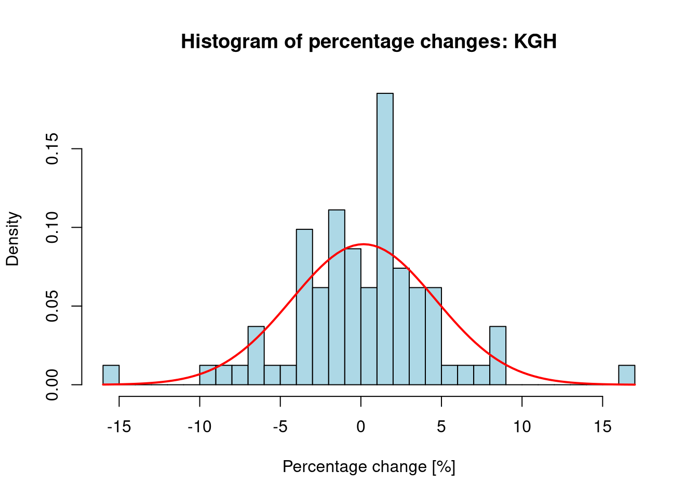

The file tempciala.txt contains recorded values of heart rate and body temperature for 65 men (gender = 1) and 65 women (gender = 2).
Separately for men and women:
estimate the mean and standard deviation of temperature,
verify at the significance level \(\alpha = 0.05\) the hypothesis that the mean temperature is equal to 36.6 \(^\circ\)C against the alternative hypothesis that the mean temperature is different, assuming that the temperatures have a normal distribution and the variance of the distribution is unknown.
Since the variance of the distribution is unknown as indicated in the task, it should be estimated based on the sample standard deviation. Student’s t-test provides a wider “width” of the normal distribution, allowing for safer inference with an unknown variance.
The t.test function requires the investigated characteristic to have a normal distribution. This is satisfied by the task description.
Gender Mean Std_dev
1 Men 36.72615 0.3882158
2 Women 36.88923 0.4127359
show/hide
# Hypothesis tests of hypothetical mean body temperature (H0: mu = 36.6)# By default, a two-sided test is performed# The confidence level resulting from the task is explicitly providedmen_test <-t.test(men_temp, conf.level =0.95, mu =36.6)women_test <-t.test(women_temp, conf.level =0.95, mu =36.6)men_test
One Sample t-test
data: men_temp
t = 2.6199, df = 64, p-value = 0.01097
alternative hypothesis: true mean is not equal to 36.6
95 percent confidence interval:
36.62996 36.82235
sample estimates:
mean of x
36.72615
show/hide
women_test
One Sample t-test
data: women_temp
t = 5.6497, df = 64, p-value = 3.985e-07
alternative hypothesis: true mean is not equal to 36.6
95 percent confidence interval:
36.78696 36.99150
sample estimates:
mean of x
36.88923
1.1 Conclusions
For men, the estimated mean temperature is approx. 36.73 \(^\circ\)C, and the standard deviation is approx. 0.39 \(^\circ\)C. The p-value (0.011) is less than \(\alpha=0.05\), so we reject the null hypothesis \(H_0\) in favor of the alternative. The mean temperature in men differs significantly from 36.6 \(^\circ\)C.
For women, the estimated mean temperature is approx. 36.89 \(^\circ\)C, and the standard deviation is approx. 0.41 \(^\circ\)C. The p-value (3.985e-07) is significantly less than \(\alpha=0.05\), so we reject the null hypothesis \(H_0\) in favor of the alternative. The mean temperature in women also differs significantly from 36.6 \(^\circ\)C.
2 Investigation of Seasonality of Phenomena
The table below contains data regarding the number of suicides in the United States in 1970, broken down by individual months.
Month
Number of suicides
Number of days
January
1867
31
February
1789
28
March
1944
31
April
2094
30
May
2097
31
June
1981
30
July
1887
31
August
2024
31
September
1928
30
October
2032
31
November
1978
30
December
1859
31
Verify at the significance level \(\alpha = 0.05\) whether the presented data indicate a constant intensity of the investigated phenomenon, or rather suggest seasonal variation in the number of suicides. Assume that in the case of a constant intensity, the number of suicides in a given month is proportional to the number of days in that month.
show/hide
# Datasuicides <-c(1867, 1789, 1944, 2094, 2097, 1981, 1887, 2024, 1928, 2032, 1978, 1859)days_in_month <-c(31, 28, 31, 30, 31, 30, 31, 31, 30, 31, 30, 31)# Hypothesis: number of suicides proportional to the number of days# Theoretical probabilitiestheoretical_probs <- days_in_month /sum(days_in_month)# Chi-squared goodness-of-fit testseasonality_test <-chisq.test(x = suicides, p = theoretical_probs)seasonality_test
Chi-squared test for given probabilities
data: suicides
X-squared = 47.365, df = 11, p-value = 1.852e-06
2.1 Conclusions
The p-value (1.852011e-06) is significantly less than the significance level \(\alpha=0.05\). This means we reject the hypothesis of a constant intensity of suicides proportional to the number of days in the month. The data indicate the presence of seasonal variation in the number of suicides.
3 Advanced Normality Tests of Financial Time Series
For a selected company listed on the Warsaw Stock Exchange (GPW), load data from the stooq.pl website, and then
calculate the percentage changes of the lowest prices on individual days over the last year, plot their histogram, and draw the probability density function of a normal distribution with parameters estimated based on their values,
applying various tests discussed in the examples, verify at the significance level \(\alpha = 0.05\) the hypothesis that the percentage changes of the lowest prices on individual days over the last year have a normal distribution.
show/hide
library(moments)library(nortest)# Selected company: KGHMif (file.exists(".env")) readRenviron(".env")apikey <-Sys.getenv("STOOQ_API_KEY")ticker <-'KGH'url <-paste0('https://stooq.pl/q/d/l/?s=', ticker, '&i=d', '&apikey=', apikey)file_path <-paste0("data/", ticker, ".csv")if (!file.exists(file_path)) {download.file(url, file_path, quiet =TRUE)}kgh_df <-read.csv(file_path)names(kgh_df)[names(kgh_df) =="Data"] <-"Date"names(kgh_df)[names(kgh_df) =="Najnizszy"] <-"Low"kgh_df$Date <-as.Date(kgh_df$Date)kgh_year_df <- kgh_df[which(kgh_df$Date >= (Sys.Date() -365)),]low_prices <- kgh_year_df$Low# Calculation of percentage changes (vector method avoiding NA)pct_changes <-diff(low_prices) / low_prices[-length(low_prices)] *100# Parameters for normal distributionmu <-mean(pct_changes)sigma <-sd(pct_changes)# Histogram and densityhist(pct_changes, breaks =30, probability =TRUE, main =paste("Histogram of percentage changes:", ticker),xlab ="Percentage change [%]", ylab ="Density", col ="lightblue")curve(dnorm(x, mean = mu, sd = sigma), add =TRUE, col ="red", lwd =2)

show/hide
# Normality testsshapiro_test <-shapiro.test(pct_changes)ks_test <-ks.test(pct_changes, "pnorm", mean = mu, sd = sigma)# Tests from the "moments" libraryans_test <-anscombe.test(pct_changes)ago_test <-agostino.test(pct_changes)jb_test <-jarque.test(pct_changes)lillie_test <-lillie.test(pct_changes)shapiro_test
Shapiro-Wilk normality test
data: pct_changes
W = 0.96276, p-value = 0.01876
show/hide
ks_test
Exact one-sample Kolmogorov-Smirnov test
data: pct_changes
D = 0.080729, p-value = 0.637
alternative hypothesis: two-sided
show/hide
ans_test
Anscombe-Glynn kurtosis test
data: pct_changes
kurt = 5.4126, z = 2.9517, p-value = 0.003161
alternative hypothesis: kurtosis is not equal to 3
show/hide
ago_test
D'Agostino skewness test
data: pct_changes
skew = -0.085543, z = -0.338092, p-value = 0.7353
alternative hypothesis: data have a skewness
show/hide
jb_test
Jarque-Bera Normality Test
data: pct_changes
JB = 19.743, p-value = 5.163e-05
alternative hypothesis: greater
show/hide
lillie_test
Lilliefors (Kolmogorov-Smirnov) normality test
data: pct_changes
D = 0.080729, p-value = 0.2151
3.1 Conclusions
Statistical analysis of the percentage changes of the KGH stock price exhibits classic characteristics of financial time series. The results of the tests at the significance level \(\alpha = 0.05\) are as follows:
Rejection of normality: The Shapiro-Wilk test (\(p = 1.876e-02\)) and the Jarque-Bera test (\(p = 5.163e-05\)) unambiguously reject the null hypothesis \(H_0\).
Cause of non-normality (leptokurtosis): The Anscombe-Glynn test shows high kurtosis at 5.41. The very low \(p = 3.161e-03\) provides statistical evidence for the presence of “heavy tails”.
Skewness: D’Agostino’s test shows skewness at -0.086. The p-value \(p = 0.7353\) is greater than \(\alpha\), meaning there are no grounds to reject the hypothesis of distribution symmetry.
KS test specificity: The Kolmogorov-Smirnov test (\(p = 0.637\)) is the only one that does not reject \(H_0\). This confirms its lower sensitivity to tail anomalies compared to moment-based tests (JB, Anscombe). The test measures the maximum distance between cumulative distribution functions, which in this case oscillates around the area of highest probability density, explaining the above statement. Furthermore, the KS test could be somewhat overly optimistic due to estimating parameters from the sample – it is less likely to reject the hypothesis of non-normality even when the data are non-normal.
To “update” the KS test, an additional Lilliefors test was conducted using the “nortest” library. This test clearly indicates non-normality since \(p = 2.151e-01\) clearly rejects the null hypothesis \(H_0\).
Summary: Since key tests (Shapiro-Wilk, Jarque-Bera) returned \(p < \alpha\), we assume that the price change distribution is not normal. The dominant feature is leptokurtosis, which means that the risk of extreme events is higher than in the theoretical model.
4 Comparison of the Lifespan of Industrial Components
The file lozyska.txt contains the operating times (in millions of cycles) until failure of bearings made of two different materials.
Perform a test of no difference between the operating times of bearings made of different materials, assuming that the operating time until failure is described by a normal distribution, without assuming equal variances. Assume a significance level \(\alpha = 0.05\).
Perform an analogous test, without assuming normal distributions.
(optional) Estimate the probability that a bearing made of the first material will operate longer than a bearing made of the second material.
Welch Two Sample t-test
data: type1 and type2
t = 2.0723, df = 16.665, p-value = 0.05408
alternative hypothesis: true difference in means is not equal to 0
95 percent confidence interval:
-0.07752643 7.96352643
sample estimates:
mean of x mean of y
10.693 6.750
show/hide
# 2. Wilcoxon test (without assuming normality)wilcox_test <-wilcox.test(type1, type2)wilcox_test
Wilcoxon rank sum exact test
data: type1 and type2
W = 75, p-value = 0.06301
alternative hypothesis: true location shift is not equal to 0
show/hide
# 3. Estimating the probability P(X > Y)# We can do this by checking all pairs (x_i, y_j)comparison_matrix <-outer(type1, type2, ">")p_hat <-mean(comparison_matrix)p_hat
[1] 0.75
4.1 Conclusions
The result of Welch’s t-test (p-value = 0.0541) at the significance level \(\alpha=0.05\) provides no grounds to reject the hypothesis of no difference between the mean bearing operating times (p-value > 0.05).
The result of the Wilcoxon test (p-value = 0.063) also does not allow rejecting the hypothesis of no difference between the distributions (p-value > 0.05).
In both cases, we assume that there are no statistically significant differences in the operating times of bearings made of different materials.
Additionally: The estimated probability that a bearing made of the first material will operate longer than a bearing made of the second material is approximately 75%. Although Type I bearings operated longer than Type II bearings in 75% of cases, at the significance level \(\alpha = 0.05\), it was not possible to prove that this difference is permanent and reproducible. This suggests that Type I may be better in practice; however, to confirm this thesis with statistical certainty, further study with a larger sample size is required.
5 Analysis of Statistical Independence in Sports
Using data from the pl.fcstats.com website, verify the hypothesis of independence of home team results (wins, draws, and losses) from the country in which the football matches are played. Assume a significance level \(\alpha = 0.05\).
Perform the tests based on data regarding the following leagues:
German – Bundesliga (German league),
Polish – Ekstraklasa (Liga polska),
English – Premier League (English league),
Spanish – LaLiga (Liga hiszpańska).
The data can be found in the “Porównanie lig” (League comparison) -> “Zwycięzcy meczów” (Match winners) tab, in columns (excluding the [%] sign):
1 – home wins, e.g., 125 for the German league (Bundesliga),
The p-value (0.1116) is greater than the significance level \(\alpha=0.05\). This means there are no grounds to reject the hypothesis of the independence of match results (wins, draws, and losses) from the country/league in which the matches are played. The 1, X, 2 statistics in the analyzed leagues are sufficiently close to each other to prevent finding significant differences.